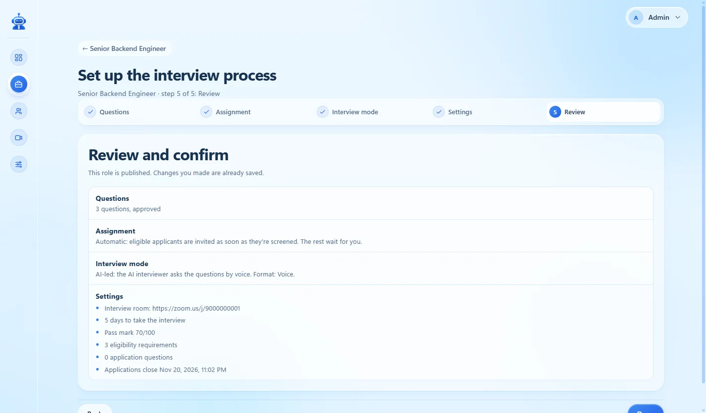

To automate interviews with AI, you hand the live conversation to an AI interviewer: a voice agent that joins the call, asks the questions, listens, follows up and hands the conversation back for a person to judge. The useful ones are structured. Every candidate for a role hears the same approved questions in the same order, which matters because structured interviews are among the strongest predictors of job performance in the research literature.
That last point is also where most AI interview tools go wrong. A large language model left to "run an interview" will happily improvise: it rephrases questions, skips one when the conversation drifts, invents a new one when it feels clever. Each of those choices makes two candidates' interviews less comparable, which quietly undoes the reason you structured the interview in the first place.
This guide shows how we built Recruence, an open-source AI interviewer and companion app for MeetStream, so that the model owns the conversation and your system owns the interview. It covers the bot that joins the call, the tools the voice agent gets instead of the plan, the webhooks that tell you what's happening, the safeguards for when the agent goes quiet, and how to run it where candidates can reach it. Every snippet is trimmed from Recruence's code. Let's get started!
Key takeaways
Let the voice agent own the conversation and your service own the interview. Release approved questions one at a time through a tool call, enforce consent, follow-up limits and the time limit in code, watch the call for an agent that goes quiet, and leave the decision to a person with a report that quotes the candidate.
What does an AI interviewer system need?
Five pieces, each with one job:
A recruiter dashboard where a role's questions are written and approved once. Every candidate for that role gets exactly those questions.
A candidate link: the candidate confirms a code sent by email, reads a notice that an AI runs the interview and that it's recorded, and presses Start.
A MeetStream bot that joins the candidate's Google Meet, Microsoft Teams or Zoom call, with MeetStream's MIA voice agent doing the talking.
Your interview service, which releases questions one at a time, enforces consent, follow-up limits and the time limit, and keeps the record.
A report with notes per question, quoted evidence for each score, and a decision field that only a person fills in.
Why do structured interviews matter for hiring?
A structured interview fixes three things in advance: the questions, the order they're asked in, and how answers are scored. Everything else, from small talk to the follow-up wording, can flex. The point is comparability. When two candidates answer the same question, you can compare the answers instead of comparing two different conversations.
The evidence for this is old and consistent. Decades of hiring research have found that structured interviews predict job performance better than unstructured ones (Schmidt and Hunter, 1998), and a 2022 re-analysis by Sackett and colleagues ranks them among the strongest selection methods available.
A language model optimises for a good conversation, not for a fair comparison. Left to run the interview itself, it tends to:
Skip questions. Given the whole plan at once, it can move on before a question is asked, or run out of time before the last one.
Reword questions. Small rewordings change what a question measures. "Tell me about a hard deadline" and "tell me about a missed deadline" invite different stories.
Over-follow-up. An engaged candidate can pull it into follow-up after follow-up on one question, crowding out the rest.
Go quiet without saying so. A voice agent that stalls doesn't always report an error.
The short answer
The model should own the conversation; your system should own the interview. Questions, order, consent, follow-up limits and time limits are rules, and rules belong in code you control.
What do you need before you start?
Gather these first; the build steps below assume them:
A MeetStream account and API key. The bot, the voice agent, recording and transcription all run on MeetStream.
Voice keys in MeetStream → Integrations for the agent's three parts: speech-to-text (for example Deepgram), the conversation model (for example Gemini) and text-to-speech (for example ElevenLabs).
An AI provider for your own service, which writes interview plans and evaluates answers: Gemini, Claude, OpenAI or a compatible server, xAI, or a local Ollama model. Use a paid tier for real candidates.
A public HTTPS address where MeetStream can reach your service: a tunnel for a desktop install, or a cloud backend (step 7).
A meeting platform: Google Meet, Microsoft Teams, or Zoom with a Zoom Meeting SDK app set up in MeetStream.
Email (SMTP) for invitations and the candidate's access code.
How do you automate interviews with AI, step by step?
Seven steps, in the order a call happens: from sending the bot in to running the whole thing where candidates can reach it.
Step 1: Send a bot into the candidate's call
The bot is the AI interviewer's seat in the meeting. One call to MeetStream's create bot endpoint sends it to the meeting link, with two webhook addresses for what happens next and a voice agent attached. This is the payload Recruence sends, trimmed:
Raise the voice inactivity timeout. Candidates pause to think. With the default, a long pause can end the call mid-interview.
Each session gets its own secret token in the webhook addresses. A guessed or old address finds nothing, and the token never appears in your logs: Recruence's log filter replaces every token in a path with ***.
Each platform admits the bot differently. On Google Meet the host's meeting must have started. On Teams the bot waits in the lobby until someone admits it. On Zoom, the bot needs a Zoom Meeting SDK app set up in MeetStream, and the host must allow it to record. The Google Meet, Zoom and Teams guide covers each platform's setup.
Recruiters rarely want to paste meeting links. If a calendar is connected in MeetStream, Recruence offers its upcoming Google Meet, Teams and Zoom meetings in a picker that fills in the link and start time. MeetStream answers from its own copy of the calendar, so Recruence also passes on why that copy might be out of date: when MeetStream can't refresh its sign-in to the calendar, the picker says so and asks you to reconnect the calendar in MeetStream.
Step 2: Give the voice agent tools, not the plan
This is the core of the design. The voice agent never sees the whole question list. It gets three custom functions, and your service answers each call. The agent can't ask question three until your service hands it question three.
Recruence
One question at a time, released by your system
Join the callbot admitted from the lobby
→
Consentno question before a yes
→
Fetch Q1via next_question
→
Answer + follow-upseach one asked for first
→
Repeatuntil the plan says done
recruence / blog
The agent asks for each question; the plan never leaves your service in one piece.
next_question returns the next approved question word for word, or consent_required, or done.
follow_up is called before every follow-up and answers ok or limit_reached.
end_interview closes the call after the goodbye, with a reason: completed, consent_declined or candidate_stopped.
Here are two of them, trimmed from the agent configuration Recruence sends to MeetStream. Every call carries a bearer token that only your service knows:
[
{
"name": "next_question",
"description": "Get the next planned interview question. First call: after the candidate
agrees, with candidate_consented true. Returns status \"question\" with the question
to ask word for word, \"consent_required\", or \"done\".",
"method": "POST",
"url": "https://your-app/webhooks/mia/<session token>/next_question",
"parameters": {
"candidate_consented": { "type": "boolean" },
"previous_question_id": { "type": "string" },
"answer_note": { "type": "string" },
"follow_ups_asked": { "type": "integer" }
}
},
{
"name": "follow_up",
"description": "Call this before each follow-up question. Returns status \"ok\" (ask your
follow-up) or \"limit_reached\" (don't ask it: call next_question to move on).",
"method": "POST",
"url": "https://your-app/webhooks/mia/<session token>/follow_up",
"parameters": { "question_id": { "type": "string" } }
}
]
Four rules live on the service side, where the model can't talk its way around them:
The consent gate. Until the agent reports a clear yes, next_question answers consent_required and releases nothing.
Order. The tool only ever returns the next question in the approved plan, so nothing is skipped or reordered.
Follow-up limits. The agent must ask before each follow-up, and the service counts. A limit written only in the prompt is a suggestion; a limit the service enforces is a rule.
The time limit. Once the interview's time is up, next_question answers done instead of releasing another question, and the agent closes the interview.
One more rule concerns the candidate's side of the turn: when is an answer finished? A voice agent decides from silence, and interview answers are full of thinking pauses. Recruence lets the candidate decide instead:
Say it up front. The AI's opening and the notice in the meeting chat tell the candidate: "Take your time with each answer; pauses are fine. When you've finished, just say 'that's my answer'."
Treat a pause as thinking time. The agent's instructions say a pause on its own doesn't end an answer. If an answer trails off, the agent says at most "Take your time." and keeps listening, and it never calls next_question or follow_up while an answer is in progress.
Wait longer before replying. MIA's endpointing is set to dynamic, with up to 8 seconds of silence before the agent takes its turn.
Why not let the candidate mute their microphone to say "done"? Because the bot can't see it: MeetStream reports participants joining and leaving, not microphones going on or off, and there's no documented way to tell a running voice agent to reply now. A spoken cue works on every platform.
Because every question passes through your service, the record is exact: you know which answer belongs to which question, which is what makes the evidence-based scorecard afterwards possible.
Step 3: Listen to the call through webhooks
MeetStream reports the call to the two addresses from step 1:
Events say where the bot is: waiting in the lobby, in the meeting, recording, leaving, stopped. They also carry errors from the voice agent, such as its AI provider refusing a request.
Live transcript lines arrive sentence by sentence, with the speaker's name from the meeting. Recruence files each line under the question that was open when it was spoken.
Callbacks aren't retried, so Recruence also polls the bot's status as a backup. Two things to know about transcripts: speaker labels are exact on Zoom and approximate on Teams (it reports the dominant speaker), and on Teams the transcript doesn't include the bot's own voice. Recruence records each question's text itself, so the report always shows what was asked.
Step 4: Watch the call for problems
A voice agent can go quiet, get stuck on a question, or miss a candidate's request to stop, without the platform reporting an error. So Recruence watches the call itself:
What goes wrong
What Recruence does
The agent hasn't started 90 seconds after joining
Alerts the hiring team and tells the candidate in the meeting chat to stay on
Still nothing after 5 minutes
Ends the call. Nothing the candidate said is kept: there was no consent yet
On Zoom, recording isn't allowed yet
Starts those clocks only once the host allows recording, since the agent can't work before then
A question stays open far longer than its share of the time
Flags it and tells the candidate they can ask the AI to move on
The candidate asks to stop and the agent carries on
Ends the call itself 25 seconds later
The agent's AI provider or voice fails (for example, a quota error, or text-to-speech that returns no audio)
Logs it, alerts the hiring team, and tells the candidate there's a technical problem. If the agent hasn't recovered after 2 minutes, it ends the call
The questions are finished but the agent doesn't hang up
Ends the call itself 45 seconds after the last question
Every alert becomes a flag on the interview, shown under "To review" in the dashboard, so nobody has to watch the call live.
Step 5: Show the candidate what's happening
Candidates should never wonder what the AI is doing. Recruence posts an AI-interview notice in the meeting chat when the bot joins, and each question as it's asked ("Question 2 of 3: …"), so a candidate who misheard can read it. On Zoom, Recruence doesn't post in the chat; the AI reads each question aloud.
Before the call, the candidate's link asks for the code from their email and shows the notice, and the interview starts only when they press Start. Opening the link alone never sends a bot.
Step 6: Turn the call into a report a person can trust
When the call ends, Recruence builds the report from its own record: each question with the agent's answer note and the follow-ups asked, the transcript, how much the candidate spoke, and an evaluation where every score quotes something the candidate actually said. The recommendation is the AI's; the decision is a separate field that only a person sets.
Consent decides what's kept. If the candidate declines, nothing is evaluated, their words are dropped, and MeetStream is asked to delete the recording. Recordings are also kept only for the retention time set in step 1.
Recruence
Every score quotes the candidate
recruence / blog
A Recruence report (demo data): the score, the recommendation, and each requirement backed by the candidate's own words.
To get results into the rest of your hiring stack, Recruence sends a signed webhook (HMAC-SHA256) when a report is ready, and can post results to an applicant tracking system. Both are signed, and retried if the receiving system is briefly unavailable.
Recruence
A role's five setup steps

recruence / blog
A role's setup: the questions are approved once, then reused for every candidate.
Step 7: Run it where candidates can reach it
MeetStream has to reach your webhooks, so your service needs a public HTTPS address. Recruence runs two ways:
On your computer, as a desktop app for Windows, macOS or Linux, with a tunnel for MeetStream's callbacks. Fine for trying it; interviews need the computer on.
As a cloud backend, a Docker container behind HTTPS, so interviews run with every recruiter's computer off. It runs in Docker behind Caddy or on platforms like Railway, with PostgreSQL or a Neon database.
Each interview is its own session, with its own bot, voice agent, webhook token, transcript and report, so several can run at once from one install. Three ran side by side on one desktop install, and when MeetStream refused one bot, only that interview failed.
When you deploy it:
Refuse plain HTTP. If a proxy forwards plain http, Recruence redirects page loads to HTTPS and refuses sign-ins and applications outright, so a password never travels unencrypted.
Trust only your proxy. List your platform's proxy addresses in TRUSTED_PROXIES (on Railway, 100.64.0.0/10) so the backend knows visits arrive over HTTPS.
The server's address wins. When a desktop install moves to the cloud, a public address saved earlier (the old tunnel) is ignored, so candidate links and callbacks don't point at a computer that's off.
Run near the database. Put the backend in the same region as your Neon database; every request makes several round trips to it.
Give monitors a real readiness check./api/health/ready answers 503 while the database is down, and every other request gets a clear "try again in a minute" instead of an error page.
Where do AI interviewers sit in the hiring market?
"AI interview" covers several quite different products. The differences matter more than the label, especially for candidates.
Format
How it works
Candidate experience
Main trade-off
One-way video
Candidate records answers to fixed prompts
Talking to a camera, no interaction
Consistent, but no follow-ups
Chat screening
Text questions in a web form or chat
Fast, low effort
Shallow; easy to answer with AI help
Live AI voice interview
A voice agent asks and follows up in a real call
Closest to a phone screen
Needs structure, consent and good audio
Human interview
A person asks and judges
Personal
Expensive, hard to keep consistent
Regulators are paying attention to all of them. In the EU, AI used in recruitment counts as high-risk under the AI Act, with duties around transparency, human oversight and record keeping, and New York City requires bias audits and candidate notices for automated hiring tools.
The design in this guide lines up with those obligations rather than fighting them: a fixed plan is auditable, a consent gate is a notice you can prove, and a separate human decision is human oversight. Treat that as a floor, not legal advice.
How should you roll out an AI interviewer?
When you first automate interviews with AI, start small and keep a person in the loop. This checklist is what we'd do with any AI interviewer, ours included:
Pick one role with a clear job description. Screening interviews for well-defined roles are the easiest place to start.
Write four to six questions mapped to competencies, each with what a good answer shows. Approve them before any candidate sees them.
Set follow-up limits and an interview length so a long answer to question one can't crowd out question four.
Tell candidates before the call that an AI runs the interview, that it's recorded, and how to ask for a human interviewer instead.
Run a pre-flight check before each live session: AI quota, the MeetStream key, that MeetStream can reach your public address, and the role's questions.
Run it on yourself first, on the meeting platform your candidates use, with headphones and without.
Review every report with the transcript open for the first few weeks. Check that each score rests on something the candidate actually said, and check the "To review" flags.
What to take away about AI interviewers
To automate interviews with AI and keep them fair, remember that an AI interviewer is only as fair as its structure, and only as reliable as the system watching it. The model is good at the parts humans find tiring, like listening closely, asking a natural follow-up and keeping time. It's bad at the parts that need to be rules. Put the questions, their order, consent, the limits and the record in your own system, release questions one at a time, watch the call, and keep the decision with a person.
Recruence is open source, a companion app for MeetStream: approve a role's questions, send a candidate a link, and read a report that quotes the candidate for every score. The setup guide covers your first real interview.
 Recruence
Recruence